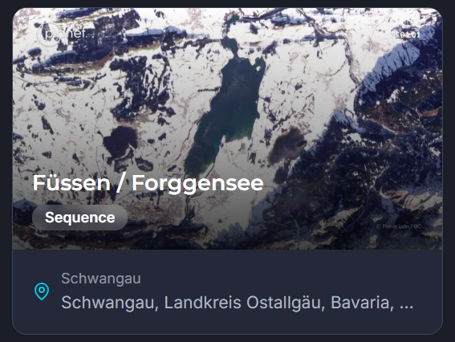
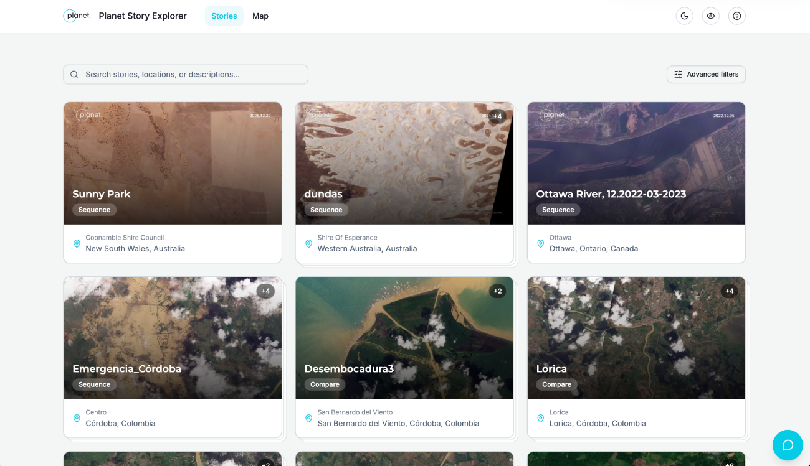
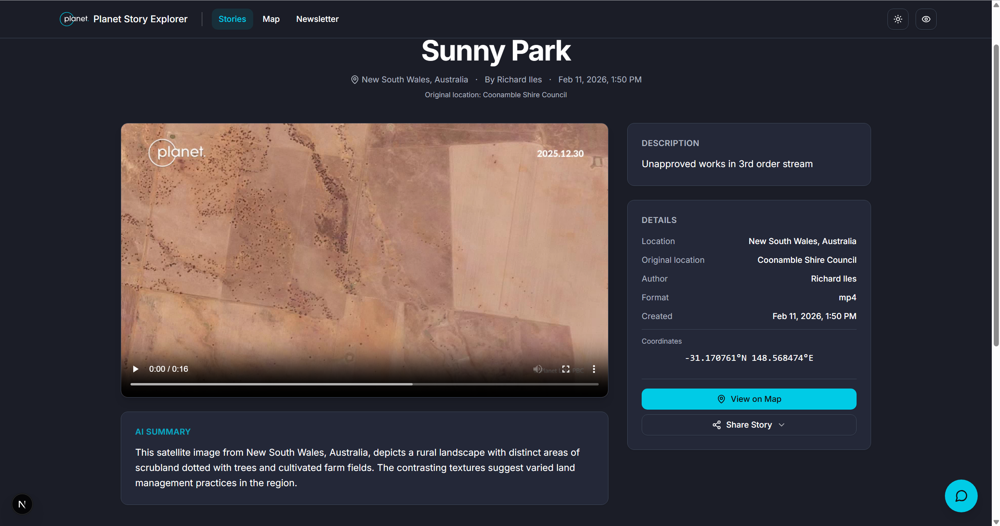
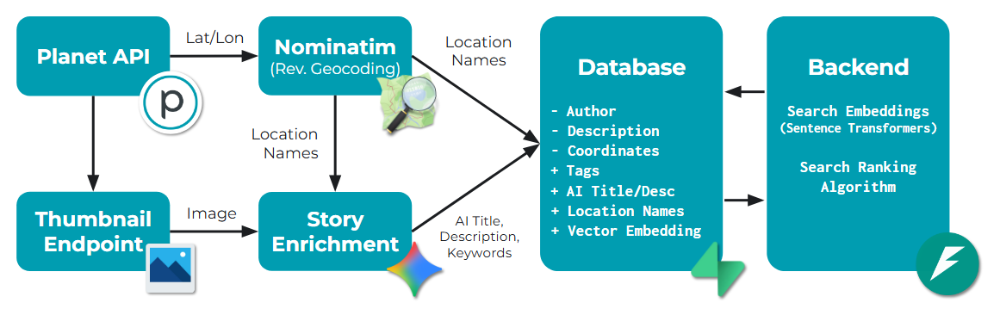
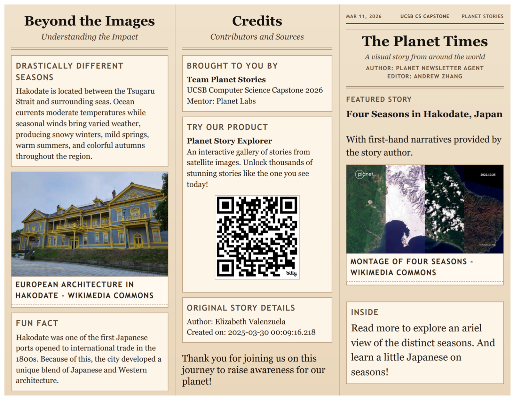

Planet Story Explorer
Discovering the Stories Behind Satellite Imagery
Role: Backend Developer & Outreach Lead
Technologies: Python, FastAPI, Semantic Search, Sentence Transformers, Gemini,
Geocoding, Database Systems
Media Coverage
Github Link: Github Repository · Poster: Project Poster (PDF)

Overview
Satellite imagery offers a unique perspective on our changing planet, capturing everything from environmental transformations to human activities across the globe. Yet behind each image lies a story that may be difficult to discover, understand, or connect with.
In collaboration with Planet Labs, our capstone team developed Planet Story Explorer, a web platform designed to make satellite imagery and its associated stories more accessible, searchable, and meaningful.
Our goal was to go beyond displaying satellite imagery: we wanted to help people discover the stories behind the images and understand their connections to the world around us.
Discovering Stories Through Search
With tens of thousands of satellite stories available, finding relevant content can be challenging, especially when users do not know exactly what they are looking for.
We developed a search system that combines traditional keyword matching with semantic search powered by Sentence Transformers, allowing users to discover stories through natural-language queries rather than relying solely on exact keywords.
The platform also supports advanced filtering and geographic exploration, helping users navigate stories through locations, descriptions, and visual content.
By combining multiple ways to search and browse, we aimed to transform a large collection of satellite imagery into an accessible space for exploration and discovery.

Understanding the Context Behind Each Image
A satellite image can show us what a place looks like, but understanding why it matters often requires additional context.
Each story in Planet Story Explorer brings together its original satellite imagery or video, geographic information, author-provided descriptions, and AI-generated summaries.
Rather than presenting visual data in isolation, the platform connects each image to a broader story through locations, descriptions, and contextual information.
This approach makes it easier for users not only to find interesting satellite imagery, but also to understand and appreciate the stories it represents.

Behind the Scenes: Backend Architecture
To support these experiences, we developed a backend pipeline for retrieving, enriching, storing, and searching satellite stories.
The system integrates data from the Planet API, reverse geocoding through Nominatim, and AI-assisted metadata generation using Gemini.
By connecting satellite imagery with geographic data and generated descriptions, the pipeline enriches stories with location names, descriptive metadata, keywords, and vector embeddings.
These enriched records are stored in the database and made accessible through our backend search and ranking system, combining keyword-based retrieval with semantic similarity.
My work as a backend developer and outreach lead contributed to the broader goal of making a technically complex collection of satellite data easier for people to explore and engage with.

From Exploration to Storytelling: AI-Generated Newsletters
Beyond helping users discover existing stories, we also explored how AI could help communicate them to a broader audience.
We developed a newsletter generation feature that transforms selected satellite stories into editorial-style publications, combining satellite imagery with contextual information, supplementary visuals, and accessible narratives.
One example, The Planet Times: Four Seasons in Hakodate, Japan, presents satellite observations of seasonal change alongside information about the city's geography, climate, and cultural background.
The newsletter includes source credits and references to the original story, encouraging readers to continue exploring through Planet Story Explorer.
As both a backend developer and outreach lead, I was especially interested in the connection between technical infrastructure and public storytelling: how systems built for retrieving and organizing information can also help people discover meaningful stories about our planet.
